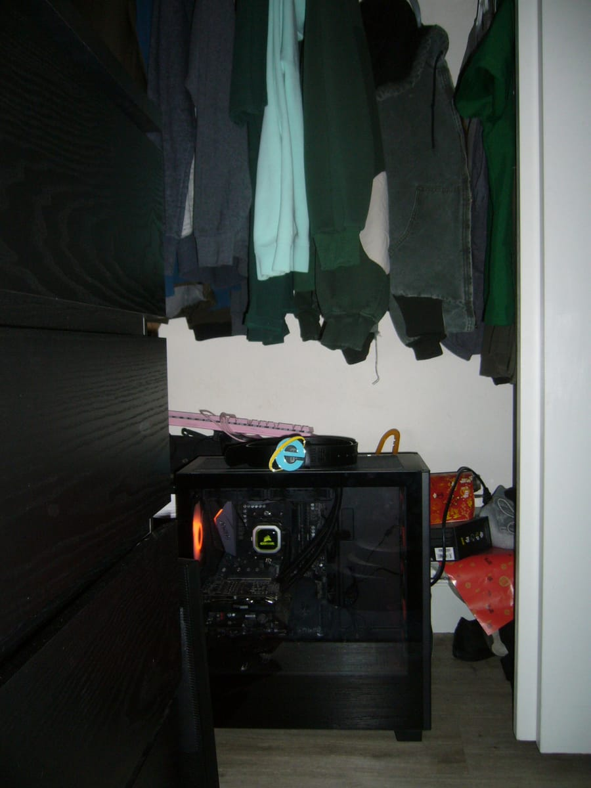
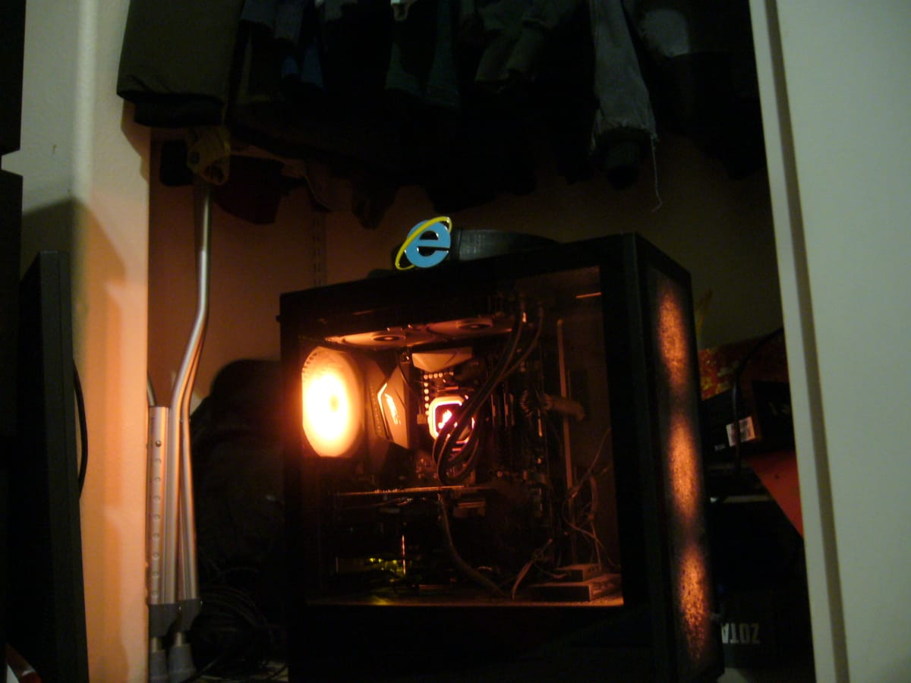

Status: loading...
Up for: ...
Last check: ...
Heads up: no check has come in for over 30 minutes, so this page may be out of date.
Each one counts as up only if the server was reachable, its service is running, and it actually answered a test request.
Last 30 days, newest first. Days are in UTC.
Checks run about every 5 minutes from Cloudflare's network, not from the server itself, so if the server goes down this page can still say so.


plorbserver is my ubuntu home server that host my current projects, such as my Pixel Tracker, Minecraft Server, and other small static webpages